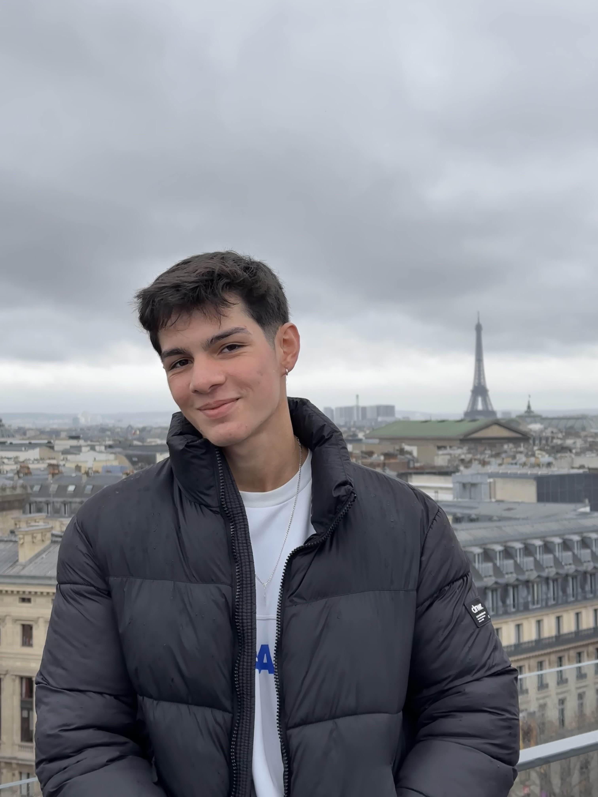

Matheus Madureira
Engenheiro de Software
Sobre Mim
Sou um engenheiro de software com experiência em desenvolvimento de aplicações desktop, web e testes de software (QA). Tenho paixão por aprender novas tecnologias e resolver problemas complexos. Sou muito curioso e proativo, além disso, adoro trabalhar em equipe usando metodologias ágeis. Meu objetivo é se tornar um ótimo desenvolvedor, que pode auxiliar e ajudar pessoas que estão começando
Linguagens de programação
- JavaScript
- Node.js
- Java
- C
Experiência Profissional
Estagiário QA - Compass UOL
Apoio no desenvolvimento de testes automatizados e estudos sobre a nuvem AWS.
Educação
Bacharelado em Engenharia de Software - Universidade Tecnológica Federal do Paraná (UTFPR)
Período: mar/2023 - dez/2026
Projetos Relevantes
Projeto 1 - Teste API de Cinema
Fiz testes manuais e automatizados para uma API, achando mais de 30 bugs/melhorias. Também fui resposável por auxílio na documentação de requisitos, casos de testes, mapa mental e plano de testes. Utilizando: Postman, Swagger, Playwright e Jira.
Projeto 2 - Aplicativo Desktop para Gerenciamento
Desenvolvimento de um aplicativo desktop para uma empresa local, utilizando: Node.js, HTML, CSS, JS e Electron. O sistema visa facilitar o gerenciamento de serviços e controle de faturamento, com funcionalidades como: CRUD de pedidos, clientes e serviços, relatório financeiro e agendamento de serviços
Certificações
Certificação AWS Cloud Practitioner - CLF-C02
Certificação de nível fundamental da AWS, que valida o conhecimento básico sobre os serviços e soluções da AWS.
Ver CertificadoIdiomas
Inglês - Intermediário (B2)
Espanhol - Básico
Alemão - Básico